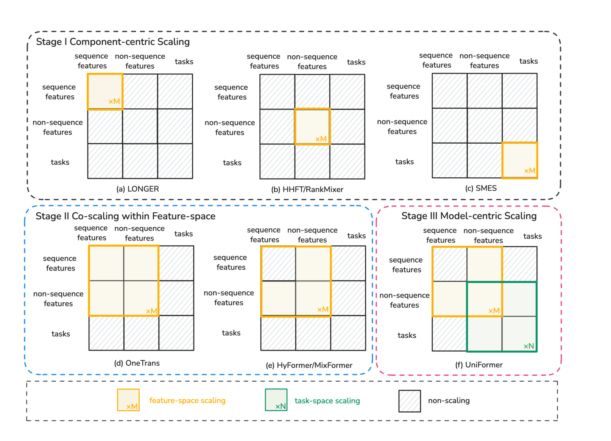
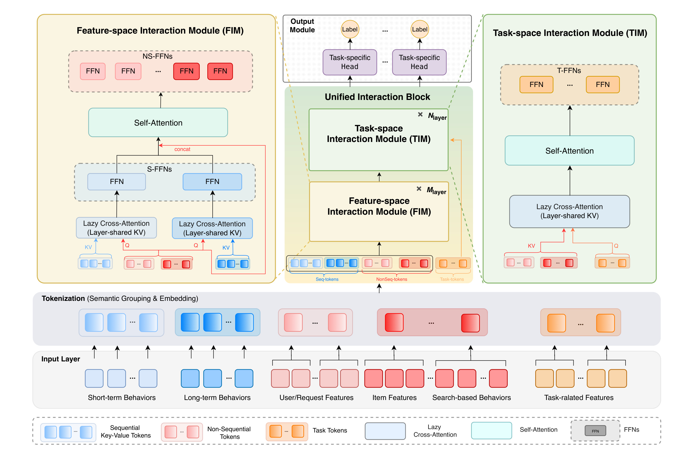
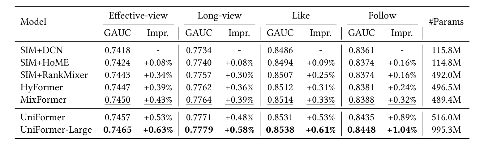
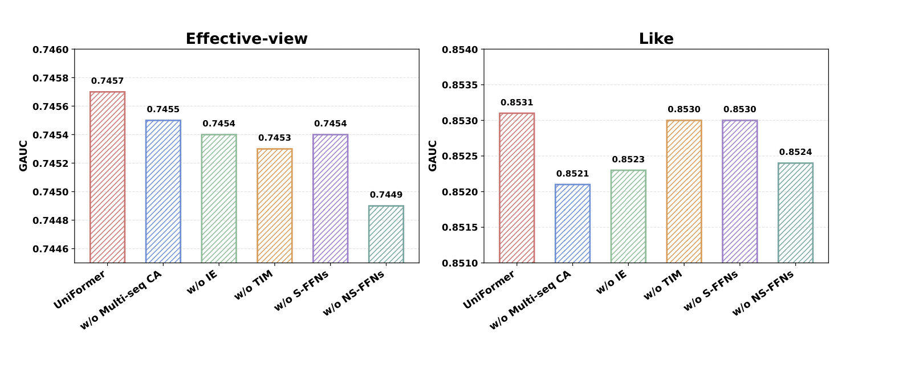
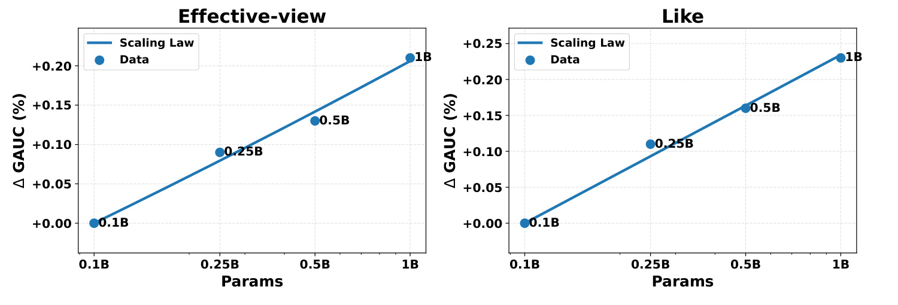
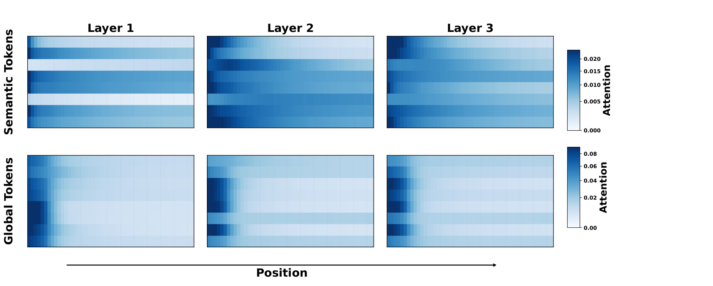
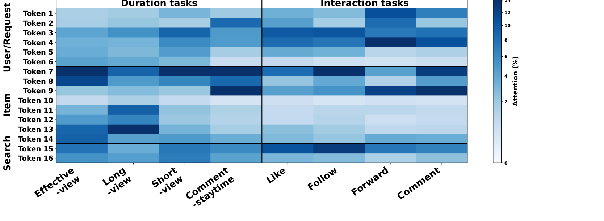
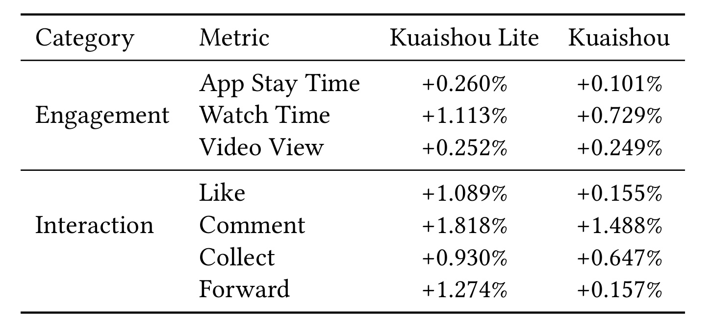

UniFormer: Efficient and Unified Model-Centric Scaling for Industrial Recommendation 是快手团队在 KDD 2025 发表的工业推荐模型扩展论文，作者包括 Bo Chen、Jinlong Jiao、Tijian Hu、Ruihao Zhang、Ruiming Tang、Han Li、Kun Gai 等。论文入口为 arXiv:2606.27058，PDF 元信息显示机构为 Kuaishou Technology，首页也给出 ACM KDD 2025 会议记录与 DOI。本文未核验到独立开源代码仓库，因此下面只把论文和 PDF 中可见的信息作为事实依据。它的核心目标不是提出一个单点 CTR 模块，而是回答工业推荐模型在行为建模、特征交互和多任务建模都要继续放大时，怎样把扩展对象从零散组件改成统一模型空间。
近年的工业推荐已经可以分别放大长序列行为模块、特征交互模块或多任务模块，但这些 component-centric 方案仍把不同建模空间割裂处理，导致算力利用、异质兴趣保持和参数分配都难以统一优化。UniFormer 要解决的矛盾是：在高并发、低延迟的线上推荐系统里，如何同时扩展 sequential behaviors、non-sequence features 和 tasks，而不让模型退回到昂贵的全量注意力或只覆盖 feature space 的半统一方案。
1. 背景和问题
工业推荐模型的历史路径大致可以分成两个阶段。早期深度推荐模型把大部分参数放在稀疏 embedding table 中，dense network 相对轻量，行为建模、特征交互和多任务学习分别由 DIN、SIM、DeepFM、DCN、MMoE、PLE、HoME 等模块承担。这个阶段的优点是模块边界清楚，线上工程容易逐步替换；缺点是每个模块只优化自己负责的一段信号，跨模块协同很弱。随着短视频推荐面对更长用户历史、更复杂候选内容、更细多目标反馈，单独扩展某个模块会越来越像局部加宽：可以拿到一点收益，却无法保证整体容量被用在最需要的行为、特征和任务关系上。
大模型带来的启发是 scaling 不是简单“把某个层做大”，而是要让更多参数进入真正限制模型表达能力的空间。推荐系统近两年的 scaling 工作已经开始把 Transformer、MoE、token mixing 和长序列建模引入排序模型，但论文把这些路线概括为 component-centric 或 feature-space co-scaling。前者如 LONGER、RankMixer、SMES，分别强化 sequence features、non-sequence features 或 tasks；后者如 OneTrans、HyFormer、MixFormer，已经把 sequential behavior 和 feature interaction 联合起来，但主要还在 feature space 里打转，task modeling 没有成为同等的一等公民。UniFormer 的问题意识就在这里：如果多任务目标是线上业务的真实优化目标，只扩展特征空间仍然不完整。

Figure 1 把论文的定位说得很直观。上排三个例子代表 Stage I：只放大 sequence、non-sequence 或 task 中的某一个块；左下两个例子代表 Stage II：把序列行为和非序列特征放在 feature space 内共同建模；右下 UniFormer 对应 Stage III：在 feature-space scaling 之外，把 task-space scaling 也纳入同一张矩阵。这个图值得放在背景章，是因为它不是普通架构图，而是论文对“扩展对象”的重新划分：推荐模型不再只是由若干手工 operator 拼起来的 pipeline，而是由 feature space 和 task space 两个可扩展空间共同组成。图中绿色 task-space scaling 的出现，也解释了为什么 UniFormer 后面必须设计 TIM，而不能只在 FIM 里继续堆 attention。
论文给出的三个挑战都来自工业约束。第一，推荐线上排序一次请求通常要给 512 或 1024 个候选 item 打分，如果把所有用户侧、item 侧、行为序列和任务 token 放进 full self-attention，训练和推理都会被二次复杂度拖垮。第二，用户行为来源高度异质，短期浏览、长期压缩兴趣、search-based long-term behaviors 对目标 item 的依赖关系不同；如果简单拼接后用共享 cross-attention，模型容易被某一类序列主导，论文称之为 preference collapse。第三，多任务目标的容量分配并不天然均衡，某些任务、特征或行为模块可能吃掉过多参数，而其他模块没有得到足够表达空间。UniFormer 因此选择“分解整体空间、复用标准算子、按语义做 tokenization、再做训练和服务优化”的路线。
这篇论文对推荐系统工程的价值在于，它把模型结构、训练效率和线上服务约束放在同一个设计里讨论。很多 ranking 模型论文只证明一个模块离线更好，最后才补一句线上可以部署；UniFormer 则在方法部分就把 request-level inference acceleration、user-item decoupling、layer-shared KV、variable-length FlashAttention、BF16 和 common compression 写进架构动机。这也意味着它的贡献不能只按“又一个 Transformer ranking model”理解，而应看作快手在大规模短视频排序场景中，把模型扩展范式从模块升级推进到统一建模空间的一次系统化总结。
2. 方法
2.1 Tokenization：先把复杂推荐输入压成可复用的语义 token
UniFormer 的第一步是 tokenization，但这里的 tokenization 不是把所有 field embedding 机械切成同形 token。论文先区分三类输入：sequential features、non-sequential features 和 task-related features，再在每类内部继续区分 item-independent 与 item-dependent。item-independent behavior 包括短期交互序列和长期压缩兴趣表示，保留原始序列结构；item-dependent behavior 例如 SIM 检索出的 candidate-aware 行为序列，则先用 target attention tokenizer 聚合成紧凑 token。这样做的核心原因是推理时同一个用户请求会对应大量候选 item，如果 key-value 表示依赖具体 target item，就无法在 request 级别复用用户侧计算。传统模块化流程可以写成：
符号解释：$e_{seq}$ 表示序列行为 embedding，$e_{non\text{-}seq}$ 表示非序列特征 embedding，$e_{task}$ 表示任务相关表示，$F_{behavior}$、$F_{interaction}$、$F_{task}$ 分别是行为建模、特征交互和任务建模函数。这个式子的问题不在于不能工作，而在于它默认三个函数按流水线串接，后一个模块只能消费前一个模块的输出，很难在统一空间里重新分配容量。
与之相比，UniFormer 的目标式更接近：
符号解释：$F_{co\text{-}scaling}$ 是同时覆盖 feature space 与 task space 的统一扩展函数。它不是直接对所有输入做全量注意力，而是先把整体空间拆成 Feature-space Interaction Module 与 Task-space Interaction Module，再通过标准化 attention 和 FFN 组合完成容量扩展。
对序列 token，论文定义了与 layer-shared KV 相关的维度安排：
符号解释：$S_{kv}$ 是 key-value split coefficient，$L_{kv}$ 是 key-value layer 数，$d_{model}$ 是模型隐藏维度。默认设置下 $S_{kv}=1$、$L_{kv}=1$，意味着多个 cross-attention 层可以共享同一组 KV，从而减少内存和计算开销。对 search-based sequence，论文把目标相关序列聚合为：
符号解释：$TA$ 是 target attention tokenizer，$e_{target}$ 是目标 item 表示，$K_{search}$ 与 $V_{search}$ 来自搜索型行为序列。这个公式对应的工程含义是：目标相关行为不再以完整长序列进入后续层，而是变成一个聚合 token，使后续 cross-attention 的 KV 尽量不随候选 item 重复计算。
2.2 FIM：在特征空间里分开处理多序列行为和非序列特征
Feature-space Interaction Module 是 UniFormer 的第一层主体。它不是把短期行为、长期行为和非序列特征全部 concat 后做一次 self-attention，而是拆成 sequential-oriented interaction 和 non-sequential-oriented interaction。前者用多序列 cross-attention 分别对短期序列和长期序列取信息；后者把这些序列交互结果与上一层 self-attention query 拼接，再用 self-attention 和 NS-FFNs 做更充分的特征交互。这个设计的重点是保留异质序列的多视角兴趣，而不是让一个共享注意力层在长短期行为之间过早平均。以短期行为为例，论文在第 $l$ 层使用：
符号解释：$CA$ 表示 cross-attention，$Q^{feat,(l-1)}_{cross}$ 是上一层用于跨序列取信息的 query，$K^{(l)}_{short}$ 与 $V^{(l)}_{short}$ 是短期序列的第 $l$ 层 KV。长序列分支使用同样结构。论文还给出全局 adaptive fusion 和 personalized adaptive fusion，把短期与长期行为的输出按全局或用户级系数融合，这对应高活跃用户与冷启动用户行为模式差异很大的工业现实。
非序列交互部分先构造 $X^{feat,(l)}=[H^{feat,(l)}_{cross}||Q^{feat,(l-1)}_{self}]$，再进行：
符号解释：$SA$ 是 self-attention，$X^{feat,(l)}$ 是序列交互结果与非序列 query 的拼接，$f_i^{feat,(l)}$ 是第 $i$ 个 feature slice 经 feature-specific FFN 后的输出。这里的 NS-FFNs 是多视图参数扩展的一部分，不同 feature slice 有不同 FFN，可以避免所有特征共享同一容量瓶颈。论文还提到 pyramid-style split ratio，可以逐层降低 cross-attention 计算，让高层更轻量。

Figure 2 是整篇论文最重要的方法图。左侧 FIM 把短期、长期序列作为 layer-shared KV，让语义分组后的 non-seq tokens 作为 query 去取序列信号；随后 self-attention 与 NS-FFNs 对融合后的 feature tokens 做高阶交互。中间的 unified interaction block 表示 FIM 和 TIM 可以堆叠多层，底部 tokenization block 则显示短期行为、长期行为、用户请求特征、item 特征、search-based behaviors 与 task-related features 被分成不同 token。右侧 TIM 说明任务空间不是最后一个普通 head，而是也有 lazy cross-attention、self-attention 和 T-FFNs。图中灰色 lazy cross-attention 和多色 FFN 的位置，正好对应论文要平衡效率与可扩展性的设计。
2.3 TIM：把 task space 纳入统一扩展，而不是只接一个多任务塔
Task-space Interaction Module 接在 FIM 之后，用 task tokens 作为 query，对 FIM 的高阶 feature representation 做 task-aware cross-attention。它的公式是：
符号解释：$Q^{task,(l-1)}_{cross}$ 是任务侧 query，$K^{(l)}_{feat}$ 与 $V^{(l)}_{feat}$ 来自最终 feature-space representation。这个结构与 MMoE 类似地为不同任务提供不同聚合视角，但它没有另造一套专家网络，而是继续使用标准 attention operator，把任务与高阶特征关系显式建模。之后 TIM 再做 task-oriented self-attention 与 T-FFNs，让任务之间也能交互。输出阶段使用：
符号解释：$\hat{y}_i$ 是第 $i$ 个任务预测，$f_i^{task,(N)}$ 是第 $N$ 层 TIM 的任务表示，$FFN_i$ 是任务特定输出头，$\lambda_i$ 是任务损失权重，$L_i$ 可以是 BCE 等任务损失。这个设计把多目标排序从“最后一层多个 head”提前到统一交互层中处理，使 task-feature interaction 和 inter-task interaction 都能参与 scaling。
2.4 训练与推理优化：让统一扩展能落到线上服务
UniFormer 的方法章最后专门讨论训练和推理优化，这部分决定了它是否只是离线大模型，还是能进入快手线上排序。训练侧有三点。第一是 user-level common compression：同一用户请求下多个候选 item 共享用户侧行为特征，因此用户侧 common features 只存一次、处理一次，再通过 index mapping 关联到 item samples。第二是 variable-length FlashAttention：行为序列长度不一时不做 padding 后的 full batch attention，而是按真实长度计算，复杂度从 $O(BqL_{max}d)$ 下降到 $O(q\sum_i L_i d)$。第三是 BF16 training，用混合精度降低内存带宽和提升矩阵算子吞吐。
推理侧最关键的是 user-item decoupling。在线 serving 中，一个 user request 会对应数百到上千候选 item。UniFormer 的语义 tokenization 把 non-sequential features 拆成 item-independent token 和 item-dependent token，并把 SIM 这类 item-dependent behavior 聚合成不会反复展开长序列的 token。这样，用户侧 token 和 cross-attention 中可复用的部分可以按 request 计算一次，再复用到多个候选 item 上。这里的风险是 self-attention 会让 user-side representation 重新依赖 item-side key，因此论文还需要用 attention mask 移除 user-side queries 到 item-side keys 的注意力，才能真正实现请求级复用。这个细节说明 UniFormer 的 efficiency 不是靠事后工程优化硬补，而是从 tokenization、attention 路径和 serving pattern 一起设计出来的。
3. 实验结果
3.1 离线主结果：GAUC 与参数规模一起看
论文的离线实验来自快手 single page 短视频推荐场景，文中称这是快手最大的推荐场景，服务超过 4 亿日活用户，每天产生超过 500 亿交互日志。样本是 user-video pair，并包含多类型反馈。任务包括 Effective-view、Long-view、Like 和 Follow。评价指标是 GAUC，论文定义为：
符号解释：$AUC_u$ 是用户 $u$ 内部的 AUC，$w_u$ 是该用户样本数占整体样本数的权重。论文强调在如此大规模训练样本下，0.05% 的相对 GAUC 提升也被视为高度显著，并可能带来实际业务影响。这个口径很重要，因为 Table 1 中的提升看起来都是小数点后三位，但在高流量推荐系统里并不是噪声级别。

Table 1 对比了 SIM+DCN、SIM+HoME、SIM+RankMixer、HyFormer、MixFormer、UniFormer 和 UniFormer-Large。以 SIM+DCN 为基线，UniFormer 在 Effective-view、Long-view、Like、Follow 上分别达到 0.7457、0.7771、0.8531、0.8435，相对提升为 +0.53%、+0.48%、+0.53%、+0.89%；UniFormer-Large 进一步达到 +0.63%、+0.58%、+0.61%、+1.04%。更有意思的是参数规模：MixFormer 约 489.4M，UniFormer 约 516.0M，二者并非数量级差距，但 UniFormer 在四个任务上都更强；UniFormer-Large 到 995.3M 后继续提升，说明论文主张的 model-centric scaling 至少在这组工业数据上没有很快撞到收益天花板。
3.2 消融：哪些模块真正贡献了收益
消融实验选择 Effective-view 和 Like 两个任务，移除或替换关键模块：把 multi-sequence cross-attention 换成共享 cross-attention，去掉 Interaction Enhancement，去掉 TIM，用共享 FFN 替代 S-FFNs 或 NS-FFNs。这样的消融设计比较贴合论文主张，因为它不是随便删层，而是逐一验证“多序列保持异质兴趣”“feature-space 与 task-space 联合”“多视图 FFN 参数分配”三个关键假设。

Figure 3 显示，完整 UniFormer 在 Effective-view 上为 0.7457，在 Like 上为 0.8531。去掉 multi-sequence CA 后，Like 降到 0.8521，是较明显的下降，说明把不同序列简单共享注意力会损害 interaction-related task；去掉 IE、TIM 也都会下降，表明非序列特征增强和任务空间建模都不是装饰模块。最后两个变体把 S-FFNs 或 NS-FFNs 换成共享 FFN，其中 NS-FFNs 变体下降最重，Effective-view 到 0.7449，Like 到 0.8524。这支持了论文对“多视图 FFN 支持灵活参数分配”的解释：扩展参数不能只加到一个统一 FFN 中，行为序列、非序列特征和任务信号需要更细的容量承载位置。

Figure 4 用 0.1B、0.25B、0.5B、1B 参数量展示 Effective-view 和 Like 的 GAUC gain 变化。两个任务都呈现随参数量增加而上升的趋势，论文把它称作 scaling law。这里要谨慎理解：图中点数不多，不能外推出无限扩展都会持续收益；但它足以说明 UniFormer 的结构没有在 0.5B 左右马上饱和。结合 Table 1，UniFormer-Large 约 995.3M 参数仍能进一步提高四个任务的 GAUC，这对工业排序很关键，因为一个架构如果只能在小模型上赢、放大后收益消失，就很难成为长期主干。Figure 4 的真正意义是给模型中心扩展提供了正向容量曲线，而不是只证明某个模块在固定参数下有效。
3.3 可视化：semantic tokenization 与 task-feature 关系
除了分数，论文还用注意力可视化解释为什么 semantic grouping 有意义。全局 tokenization 把多个语义不同的 field 混在一起，容易得到重复、同质化的 attention pattern；semantic tokenization 则让不同 token 在不同层关注不同位置，保留更结构化的行为模式。

Figure 5 上半部分是 semantic tokens，下半部分是 global tokens。semantic tokens 在 Layer 1 到 Layer 3 中出现更多横向差异，不同 token 对 position 的关注有明显分工；global tokens 则更像重复的浅色带，注意力在相邻位置之间变化较弱。论文把这个现象解释为 semantic tokenization 缓解了 attention homogenization。对推荐系统来说，这个可视化的价值在于它给“按语义分组”提供了模型内部证据：如果用户请求特征、item 特征、search-based behavior 和长短期行为被放在同一模糊 token 空间里，后续 attention 很难稳定地区分兴趣来源；而语义 token 让不同信号在层间保留可分辨的职责。

Figure 6 展示 TIM 中不同任务对 feature tokens 的注意力分布。图中 duration tasks 和 interaction tasks 的关注区域不同，User/Request、Item、Search 三类 token 的权重也不同。论文指出，item basic features 和 search-based behavior features 在不同任务上都得到较高关注，但 item statistical features 对 duration tasks 更重要，而部分 user features 对 interaction tasks 更突出；Comment Staytime 和 Comment Rate 这类相关任务也有相似注意力模式。这个图补强了 TIM 的必要性：如果只在最后接多任务 head，模型很难显式学习任务与特征组之间的关系；TIM 通过 task tokens 让任务本身成为交互对象，能更自然地表达任务相关性和任务差异。
3.4 线上 A/B 与效率：收益是否能进入生产
论文最后给出线上 A/B 结果。UniFormer 被部署到快手和快手 Lite 两个生产场景，进行七天线上 A/B test，5% 生产流量进入实验桶。指标包括 App Stay Time、Watch Time、Video View、Like、Comment、Collect、Forward。这个设置比纯离线 benchmark 更接近工业排序论文的质量门槛，因为多目标推荐模型经常会在单一指标上升时伤害其他目标，论文也专门提到要缓解 competing objectives 之间的 seesaw effect。

Table 2 显示，快手 Lite 上 App Stay Time +0.260%、Watch Time +1.113%、Video View +0.252%，Interaction 侧 Like +1.089%、Comment +1.818%、Collect +0.930%、Forward +1.274%；快手主站上 App Stay Time +0.101%、Watch Time +0.729%、Video View +0.249%，Interaction 侧 Comment +1.488%、Collect +0.647%，Like 和 Forward 也为正向。论文没有在表中给置信区间或 p-value 细节，只写 statistically significant improvement，因此这部分应按论文声明理解，不额外放大。效率方面，论文称在生产 serving 中每个请求同时打分 512 个候选 item，通过 user-item decoupling，UniFormer 相比原始版本 QPS 提升 48%，同时 GAUC degradation negligible。这个结果把方法章的 attention mask 和 request-level reuse 连接到线上成本，说明 UniFormer 不是只靠堆参数换效果，而是在架构中为服务吞吐留了接口。
4. 总结
4.1 我的判断
UniFormer 最值得记录的地方，是它把“推荐模型 scaling”从单模块升级改成了建模空间重排。Feature-space Interaction Module 负责序列行为和非序列特征，Task-space Interaction Module 负责任务与高阶特征、任务之间的关系；tokenization、layer-shared KV、多视图 FFN 和 user-item decoupling 又把这个结构约束在工业 serving 可以接受的范围内。对快手这种多目标短视频推荐场景，这比单独做一个更大的 sequence encoder 或更强的 MoE tower 更有长期主干模型意味。
但这篇论文的证据也有边界。第一，数据、训练集和线上环境都是快手内部场景，外部无法复现 400M DAU、50B logs/day 的训练条件。第二，代码仓库未核验到，很多实现细节如 token grouping 粒度、mask 规则、融合系数初始化、线上特征缓存策略仍要靠工程团队自己还原。第三，离线提升虽在工业推荐中有意义，但绝对数值很小，迁移到更低流量或更噪声的数据集时未必稳定。第四，TIM 带来的任务交互可能依赖任务定义质量，如果业务目标本身强冲突或标签延迟严重，模型中心扩展也可能放大错误任务信号。第五，QPS +48% 是相对原始版本的 serving 优化结果，不能简单理解为 UniFormer 一定比所有已有线上主干更省资源。
4.2 工程启发与后续跟进
工程上可以优先跟进三件事。第一，梳理现有推荐主干模型中哪些部分仍是 component-centric：长序列、特征交互、多任务 tower 是否互相隔离，是否存在某个模块持续加宽但收益变慢的问题。第二，尝试把 field grouping 从“按特征来源分桶”升级为“按语义和 request/item dependency 分桶”，特别是区分用户侧可复用 token 与候选 item 相关 token。第三，做一个小规模 TIM ablation：不一定完整复现 UniFormer，但可以先让 task tokens 对高阶 feature representation 做 cross-attention，观察多目标之间的冲突是否下降。
后续阅读可以沿三条线展开。其一，读 OneTrans、HyFormer、MixFormer、RankMixer，比较它们各自把 scaling 放在 feature space 的哪一段；其二，读快手 TWIN、SIM、OneRec-v2、TokenFormer-Large，理解论文中多次提到的 lifelong behavior、lazy design 和 request-level acceleration 背景；其三，跟进 SMES、HoME、MMoE、PLE 等多任务模型，判断 TIM 相比专家路由或层级任务结构的真实差别。复现上不要从完整 1B 模型开始，应该先复现 tokenization + FIM 的小模型，再逐步加入 TIM 和 user-item decoupling；否则很容易把线上服务缓存、注意力 mask 和模型收益混在一起，最后无法判断哪一部分真正有效。